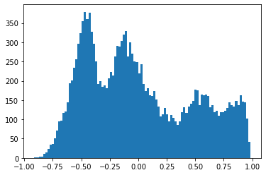

EMBED_DIM = 512
TRANSFORMER_EMBED_DIM = 768
MAX_LEN = 32 # Maximum length of text
TEXT_MODEL = "distilbert-base-multilingual-cased"
EPOCHS = 5
BATCH_SIZE = 64Multilingual CLIP with Huggingface + PyTorch Lightning 🤗 ⚡
pytorch
Loss Function
Training OpenAI’s CLIP on google colab

This is a walkthrough of training CLIP by OpenAI. CLIP was designed to put both images and text into a new projected space such that they can map to each other by simply looking at dot products.
Traditionally training sets like imagenet only allowed you to map images to a single class (and hence one word). This method allows you to map text to images, but can also be used to map images to text if the need arises.
This particular blog however is specifically how we managed to train this on colab GPUs using huggingface transformers and pytorch lightning.
A Working version of this code can be found on kaggle.
Acknowledgement
Kudos to the following CLIP tutorial in the keras documentation.
The important thing to notice about the constants is the embedding dim. We will project the output of a resnet and transformers into 512 dimensional space.
Data
We download the coco dataset which contains 5 captions per image and has roughly 82k images. We take 20% of it to be our validation set.
Considering that the image backbone is trained using imagenet, we normalise it using the imagenet stats as shown in the transforms normalize step. We also resize the image to 128x128 to make sure it trains in reasonable time.
Warning: Downloading the files will take a while (~5-10 minutes).
class Tokenizer:
def __init__(self, tokenizer: BertTokenizer) -> None:
self.tokenizer = tokenizer
def __call__(self, x: str) -> AutoTokenizer:
return self.tokenizer(
x, max_length=MAX_LEN, truncation=True, padding=True, return_tensors="pt"
)
def decode(self, x: Dict[str, torch.LongTensor]):
return [self.tokenizer.decode(sentence[:sentence_len]) for sentence, sentence_len in
zip(x["input_ids"], x["attention_mask"].sum(axis=-1))]
tokenizer = Tokenizer(AutoTokenizer.from_pretrained(TEXT_MODEL))img = inv_tfm(img)
plt.imshow(np.rot90(img.transpose(0, 2), 3))
plt.title(tokenizer.decode(target)[0])
plt.show()train_len = int(0.8*len(cap))
train_data, valid_data = random_split(cap, [train_len, len(cap) - train_len])
train_dl = DataLoader(train_data, BATCH_SIZE, pin_memory=True, shuffle=True, num_workers=4, drop_last=True)
valid_dl = DataLoader(valid_data, BATCH_SIZE, pin_memory=True, shuffle=False, num_workers=4, drop_last=False)/usr/local/lib/python3.7/dist-packages/torch/utils/data/dataloader.py:478: UserWarning: This DataLoader will create 4 worker processes in total. Our suggested max number of worker in current system is 2, which is smaller than what this DataLoader is going to create. Please be aware that excessive worker creation might get DataLoader running slow or even freeze, lower the worker number to avoid potential slowness/freeze if necessary.
cpuset_checked))Model
There are two main models, the VisionEncoder and the TextEncoder which have resnet18 and distilbert as backbones. In order to make it multi-lingual, we simply choose the distilbert-multilingual model and that’s it! No need to specifically train on non-english words as you will soon see.
The Projection module, takes the embeddings from vision and text encoders and projects them into 512 dimensional space.
Two things to note: 1. We have frozen both the text and vision encoder backbones and do not retrain their weights at all. 2. For both encoders the final output is normalised to be of unit length.
class Projection(nn.Module):
def __init__(self, d_in: int, d_out: int, p: float=0.5) -> None:
super().__init__()
self.linear1 = nn.Linear(d_in, d_out, bias=False)
self.linear2 = nn.Linear(d_out, d_out, bias=False)
self.layer_norm = nn.LayerNorm(d_out)
self.drop = nn.Dropout(p)
def forward(self, x: torch.Tensor) -> torch.Tensor:
embed1 = self.linear1(x)
embed2 = self.drop(self.linear2(F.gelu(embed1)))
embeds = self.layer_norm(embed1 + embed2)
return embedsclass VisionEncoder(nn.Module):
def __init__(self, d_out: int) -> None:
super().__init__()
base = models.resnet34(pretrained=True)
d_in = base.fc.in_features
base.fc = nn.Identity()
self.base = base
self.projection = Projection(d_in, d_out)
for p in self.base.parameters():
p.requires_grad = False
def forward(self, x):
projected_vec = self.projection(self.base(x))
projection_len = torch.norm(projected_vec, dim=-1, keepdim=True)
return projected_vec / projection_lenclass TextEncoder(nn.Module):
def __init__(self, d_out: int) -> None:
super().__init__()
self.base = AutoModel.from_pretrained(TEXT_MODEL)
self.projection = Projection(TRANSFORMER_EMBED_DIM, d_out)
for p in self.base.parameters():
p.requires_grad = False
def forward(self, x):
out = self.base(**x)[0]
out = out[:, 0, :] # get CLS token output
projected_vec = self.projection(out)
projection_len = torch.norm(projected_vec, dim=-1, keepdim=True)
return projected_vec / projection_lenCLIP loss function
For someone like me who hasn’t played around with contrastive loss, this was the most interesting part.
We know that we want the vectors of the corresponding image and the text to line up. Which means that the dot product has to be as close to one as possible. For everything else we need to push it towards 0.
Therfore for a given caption, we take the softmax of the dot products across all images, and then take cross entropy loss. Similarly for a given image, we repeat the process across all captions. We average these two losses.
In terms of which element is the true positive within a batch, remember that we are sending image, caption pairs already lined up. Therefore we want all the diagonal elements to line up while all off-diagonal elements we want to push towards zero.
def contrastive_loss(logits, dim):
neg_ce = torch.diag(F.log_softmax(logits, dim=dim))
return -neg_ce.mean()
def clip_loss(similarity: torch.Tensor) -> torch.Tensor:
caption_loss = contrastive_loss(similarity, dim=0)
image_loss = contrastive_loss(similarity, dim=1)
return (caption_loss + image_loss) / 2.0
def metrics(similarity: torch.Tensor) -> Tuple[torch.Tensor, torch.Tensor]:
y = torch.arange(len(similarity)).to(similarity.device)
img2cap_match_idx = similarity.argmax(dim=1)
cap2img_match_idx = similarity.argmax(dim=0)
img_acc = (img2cap_match_idx == y).float().mean()
cap_acc = (cap2img_match_idx == y).float().mean()
return img_acc, cap_accModel
If you haven’t used pytorch lightning before, the benefit is that you do not need to stress about which device to put it in, remembering to zero the optimizer etc. All of that is taken care of. Just simply specify the training and validation steps, along with the optimizer and you are good to go.
The other benefit that I really like is logging. You just need to write self.log("name", metric_to_track) and it will log to tensorboard by default, or any other kind of logger for that matter.
class Model(pl.LightningModule):
def __init__(self,
lr: float = 1e-3
) -> None:
super().__init__()
self.vision_encoder = VisionEncoder(EMBED_DIM)
self.caption_encoder = TextEncoder(EMBED_DIM)
self.tokenizer = Tokenizer(AutoTokenizer.from_pretrained(TEXT_MODEL))
self.lr = lr
def common_step(self, batch: Tuple[torch.Tensor, List[str]]) -> torch.Tensor:
images, text = batch
text_dev = {k: v.to(self.device) for k, v in self.tokenizer(text).items()}
image_embed = self.vision_encoder(images)
caption_embed = self.caption_encoder(text)
similarity = caption_embed @ image_embed.T
loss = clip_loss(similarity)
img_acc, cap_acc = metrics(similarity)
return loss, img_acc, cap_acc
def training_step(
self, batch: Tuple[torch.Tensor, List[str]], *args: list
) -> torch.Tensor:
loss, img_acc, cap_acc = self.common_step(batch)
self.log("training_loss", loss, on_step=True)
self.log("training_img_acc", img_acc, on_step=True, prog_bar=True)
self.log("training_cap_acc", cap_acc, on_step=True, prog_bar=True)
return loss
def validation_step(
self, batch: Tuple[torch.Tensor, List[str]], *args: list
) -> torch.Tensor:
loss, img_acc, cap_acc = self.common_step(batch)
self.log("validation_loss", loss, on_step=True)
self.log("validation_img_acc", img_acc, on_step=True, prog_bar=True)
self.log("validation_cap_acc", cap_acc, on_step=True, prog_bar=True)
return loss
def configure_optimizers(self) -> torch.optim.Optimizer:
vision_params = {"params": self.vision_encoder.projection.parameters(), "lr": self.lr}
caption_params = {"params": self.caption_encoder.projection.parameters() , "lr": self.lr}
return torch.optim.Adam([vision_params, caption_params])Train
Training is straight forward as show in the five lines below. Using 16 bit precision almost halved the training time from 16 minutes to 9 minutes per epoch. Notice how easy it was to add half precision training and gradient clipping.
Also one thing to note is that I could not get this working on TPUs so if anyone knows what I need to adjust, please let me know. Setting tpu_cores=8 just did not work.
model = Model(1e-3)
trainer = pl.Trainer(
max_epochs= 1,
gpus=torch.cuda.device_count(),
# tpu_cores=1,
gradient_clip_val=1.0,
precision=16
)
trainer.fit(model, train_dl, valid_dl) # Run the following cell if you wish to see the logs in tensorboard. But here’s a screenshot I took: 
# Load the TensorBoard notebook extension
%reload_ext tensorboard
%tensorboard --logdir ./lightning_logs/Results
I will compare the text embeddings of the first batch (in the validation set) to all the images of the validation set by taking the dot product between them.
similarity = caption_embed @ image_embed.T
val, closest = similarity.topk(5, dim=-1)
similarity.shapetorch.Size([64, 16557])draw_result(i, similarity_matrix) is a convenience function that takes the i-th caption and the similarity matrix, and plots the five closest images, along with the true image. The similarity between the caption and the image is shown in the title. The caption is printed first.
The histogram show the similarity of the caption to all images as a histogram.
draw_result(2, similarity)A baseball player in the outfield with his hands up, standing next to a team mascot.draw_result(1, similarity)A watch and clock repair shop window with clocks on display.draw_result(10, similarity)A person on a skateboard on the ground.
Below is the google translted version of one of the captions.
English caption: “A zebra standing up with it’s head down and eating grass on the dirt ground.”, tranlated into Spanish:
text = "Una cebra de pie con la cabeza gacha y comiendo hierba en el suelo de tierra."
text_dev = {k: v.to(device) for k, v in tokenizer(text).items()}
with torch.no_grad():
caption_embed_text = caption_encoder(text_dev)
similarity_text = caption_embed_text @ image_embed.Tdraw_result_single_query(10, similarity_text)Skateboarder conducting a trick with bicycles in the background.Again a translated version, this time to french. English caption: “A laptop is displayed on a small wooden platform.”
# Guy and woman in glasses shake hands while exchanging gifts.
text = "Un ordinateur portable est affiché sur une petite plate-forme en bois."
text_dev = {k: v.to(device) for k, v in tokenizer(text).items()}
with torch.no_grad():
caption_embed_text = caption_encoder(text_dev)
similarity_text = caption_embed_text @ image_embed.T
draw_result_single_query(3, similarity_text)Laptop computer on a small table on the side of a bedThe russian translation below is doing terrible though, so its clearly not bullet proof. Or perhaps I need to train for a bit longer. English caption: “A shop filled with different kinds of clocks.
text = "Магазин с разными часами"
text_dev = {k: v.to(device) for k, v in tokenizer(text).items()}
with torch.no_grad():
caption_embed_text = caption_encoder(text_dev)
similarity_text = caption_embed_text @ image_embed.T
draw_result_single_query(1, similarity_text)A room filled with clocks through a window.And lastly I check a single word version. Notice how the dog does kind of look like a bear. Maybe it’s name is bear?
text = "bear"
text_dev = {k: v.to(device) for k, v in tokenizer(text).items()}
with torch.no_grad():
caption_embed_text = caption_encoder(text_dev)
similarity_text = caption_embed_text @ image_embed.T
draw_result_single_query(1, similarity_text)Large collection of digital and analog clocks on display. Would love to hear any thoughts and comments on the above.
Shameless Self Promotion
See here for my course on Machine Learning and Deep Learning (Use code DEEPSCHOOL-MARCH to 85% off).